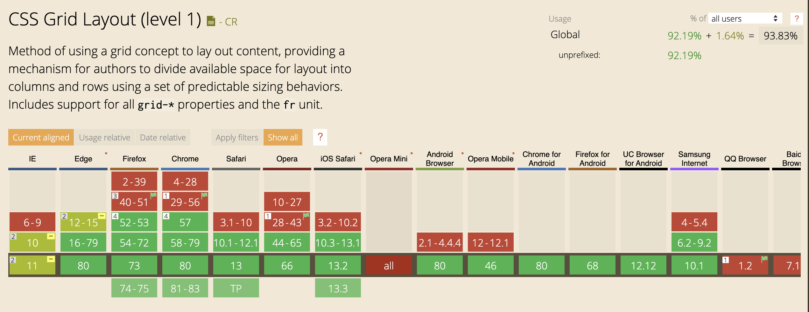

CSS Layouts
Anton Kulbashnyi
Agenda
- Basic layout terminology
- Layout implementation
- Flexible Box Layout
- Grid Layout
Box Model
Box Model

See the Pen box-model by Maria (@mariatar) on CodePen.
Margin collapse
See the Pen Margin collapse by Maria (@mariatar) on CodePen.
Document flow

See the Pen inline-block-elements by Maria (@mariatar) on CodePen.
Positioning
See the Pen static by Maria (@mariatar) on CodePen.
See the Pen absolute #3 by Maria (@mariatar) on CodePen.
See the Pen absolute #2 by Maria (@mariatar) on CodePen.
See the Pen sticky by Anton Kylbashnyi (@Tony2Night) on CodePen.
Z-index

See the Pen without z-index by Maria (@mariatar) on CodePen.
See the Pen z-index #2 by Maria (@mariatar) on CodePen.
stacking context
See the Pen z-index #3 by Tony (@Tony2Night) on CodePen.
See the Pen z-index #3 by Tony (@Tony2Night) on CodePen.
z-index notes
- Element with non-static positioning always will be above static element.
- Element with positive z-index always will be above element without it.
- On the same level the last element will be the highest one.
- Lower amount of z-index elements is better.
- In most cases you actually do not need z-index.
cheatsheet
What is layout?
Layout

Layout implementation
Tables

Floats
Float?
Just clear it
See the Pen clear-block by Maria (@mariatar) on CodePen.
See the Pen clear-block #2 by Maria (@mariatar) on CodePen.
See the Pen micro-clear-fix by Maria (@mariatar) on CodePen.
But!
See the Pen different size box by Maria (@mariatar) on CodePen.
Flexbox
Spec & Browser Support
CSS Flexible Box Layout Module Level 1

Flex-direction
See the Pen ROW flex-direction by Maria (@mariatar) on CodePen.
See the Pen COLUMN flex-direction by Maria (@mariatar) on CodePen.
Flex-wrap
justify-content
See the Pen Flex justify-content by Maria (@mariatar) on CodePen.
Align-items
See the Pen Flex align-items by Maria (@mariatar) on CodePen.
Align-self
See the Pen abOpGbb by Anton Kylbashnyi (@Tony2Night) on CodePen.
Flex Grow / Flex Shrink
See the Pen wvagjWj by Anton Kylbashnyi (@Tony2Night) on CodePen.
Order
See the Pen flex order by Maria (@mariatar) on CodePen.
Grid
Spec & Browser Support
CSS Grid Layout Module Level 1 CSS Grid Layout Module Level 2(SUBGRID DRAFT) Basic grid terminology
display: grid & display: inline-grid
See the Pen grid-layout by Maria (@mariatar) on CodePen.
grid-template-columns & grid-template-rows

grid-area & grid-template-areas
See the Pen grid-template-areas by Maria (@mariatar) on CodePen.
grid-template
one to rule them all
See the Pen grid-template by Maria (@mariatar) on CodePen.
grid-column-gap + grid-row-gap = grid-gap
Aligning Content Along Row Axis
justify-self & justify-items
See the Pen Aligning Content Along Row Axis by Maria (@mariatar) on CodePen.
Aligning Content Along Column Axis
align-self & align-items
See the Pen Aligning Content Along Column Axis by Maria (@mariatar) on CodePen.
place-items
place-items: align-items justify-items;
See the Pen Aligning the Whole Grid with place-item by Maria (@mariatar) on CodePen.
Aligning the Whole Grid
justify-content & align-content
See the Pen Aligning the Whole Grid by Maria (@mariatar) on CodePen.
The order property in Grid Layout
See the Pen The order Property in Grid Layout by Maria (@mariatar) on CodePen.
See the Pen wvagXvZ by Anton Kylbashnyi (@Tony2Night) on CodePen.